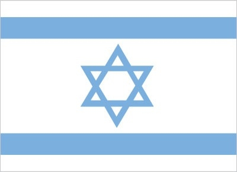
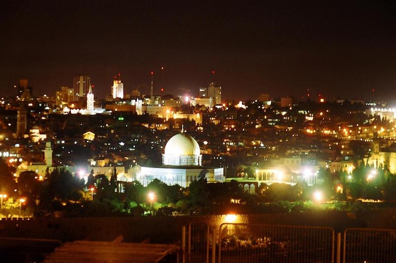

Table of contents
Introduction [back to table of contents]
The State of Israel was declared in 1948, after Britain withdrew from its mandate of Palestine.
The UN proposed partitioning the area into Arab and Jewish states, and Arab armies that rejected the UN plan were defeated. Israel was admitted as a member of the UN in 1949 and saw rapid population growth, primarily due to migration from Europe and the Middle East, over the following years.
Israel fought wars against its Arab neighbors in 1967 and 1973, followed by peace treaties with Egypt in 1979 and Jordan in 1994. Israel took control of the West Bank and Gaza Strip in the 1967 war, and subsequently administered those territories through military authorities. Israel and Palestinian officials signed a number of interim agreements in the 1990s that created an interim period of Palestinian self-rule in the West Bank and Gaza.
Israel withdrew from Gaza in 2005. While the most recent formal efforts to negotiate final status issues occurred in 2013-2014, the US continues its efforts to advance peace.
Prime Minister Benjamin NETANYAHU has led the Israeli Government since 2009; he formed a center-right coalition following the 2015 elections. Three Knesset elections held in April and September 2019 and March 2020 all failed to form a new government. The political stalemate was finally resolved in April 2020 when NETANYAHU and Blue and White party leader Benny GANTZ signed an agreement to form a coalition government.
Under the terms of the agreement, NETANYAHU would remain as prime minister until October 2021 when GANTZ would succeed him. Israel signed normalization agreements – brokered by the US – with Bahrain, the United Arab Emirates, and Morocco in late 2020 and with Sudan in early 2021.
Flag of Israel

People and Society [back to table of contents]
Immigration to Israel continues, with 28,600 new immigrants, mostly Jewish, in 2016. The Israeli economy has undergone a dramatic transformation in the last 25 years, led by cutting-edge, high-tech sectors.
Offshore gas discoveries in the Mediterranean, most notably in the Tamar and Leviathan gas fields, place Israel at the center of a potential regional natural gas market. However, longer-term structural issues such as low labor force participation among minority populations, low workforce productivity, high costs for housing and consumer staples, and a lack of competition, remain a concern for many Israelis and an important consideration for Israeli politicians.
Nationality
| noun | Israeli(s) |
|---|---|
| adjective | Israeli |
Ethnic groups
Jewish 74.4%
| Israel-born | 76.9% |
|---|---|
| Europe/America/Oceania-born | 15.9% |
| Africa-born | 4.6% |
| Asia-born | 2.6% |
| Arab | 20.9% |
| other | 4.7% |
Religions
| Jewish | 74.3% |
|---|---|
| Muslim | 17.8% |
| Christian | 1.9% |
| Druze | 1.6% |
| other | 4.4% |
Transnational Issues [back to table of contents]
Disputes - international
West Bank is Israeli-occupied with current status subject to the Israeli-Palestinian Interim Agreement - permanent status to be determined through further negotiation; in 2002, Israel began construction of a "seam line" separation barrier along parts of the Green Line and within the West Bank; as of mid-2020, plans were to continue barrier construction; Israel withdrew its settlers and military from the Gaza Strip and from four settlements in the West Bank in August 2005; Golan Heights is Israeli-controlled (Lebanon claims the Shab'a Farms area of Golan Heights); in March 2019, the US Government recognized Israel's sovereignty over the Golan Heights; since 1948, about 350 peacekeepers from the UN Truce Supervision Organization headquartered in Jerusalem monitor ceasefires, supervise armistice agreements, prevent isolated incidents from escalating, and assist other UN personnel in the region
Illicit drugs
increasingly concerned about ecstasy, cocaine, and heroin abuse; drugs arrive in country from Lebanon and, increasingly, from Jordan; money-laundering center

Jerusalem
Refugees and internally displaced persons
| As of 2019 | ||
|---|---|---|
| refugees (country of origin) | 12,181 (Eritrea) | 5,061 (Ukraine) |
| stateless persons | 42 | |
Communications [back to table of contents]
Telecommunication systems
general assessment: one of the most highly developed system in the Middle East; mobile broadband 100% population penetration; consumers enjoy inexpensive 3G and 4G cellular service; fixed broadband available to 99% of all households; 6 mobile operators in fierce competition; in 2019 govt. began process of 5G licensing (2020)
domestic: good system of coaxial cable and microwave radio relay; all systems are digital; competition among both fixed-line and mobile cellular providers results in good coverage countrywide; fixed-line 36 per 100 and 127 per 100 for mobile-cellular subscriptions (2019)
International
Country code: 972
Landing points for:
- MedNautilus Submarine System
- Tameres North
- Jonah and Lev Submarine System
Submarine cables that provide links to:
- Europe
- Cyprus
- Parts of the Middle East
Satellite earth stations: 3 Intelsat (as of 2019)
- 2 Atlantic Ocean
- 1 Indian Ocean
Telephones - fixed lines
| total subscriptions | 3,050,693 |
|---|---|
| subscriptions per 100 inhabitants | 35.68 (2019 est.) |
Telephones - mobile cellular
| total subscriptions | 10,839,024 |
|---|---|
| subscriptions per 100 inhabitants | 126.77 (2019 est.) |